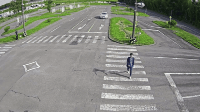
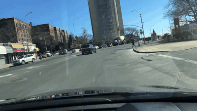

01
Prediction

Ground truth

Generative Traffic Forecasting with World Models
Introduced a decoupled forecasting framework that uses frozen V-JEPA representations to guide a frozen video diffusion model through a lightweight learned alignment module, separating traffic-world understanding from pixel-level generation.
- 3rd place, AI City Challenge 2026 (Track 5)
- Paper accepted at ECCV 2026 Workshop